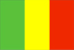

{kind=link}


![[Country map of Mali]](../maps/ml-map.jpg)
| Mali |  |
|
| | |
| Introduction |
Background: The Sudanese Republic and Senegal became independent of France in 1960 as the Mali Federation. When Senegal withdrew after only a few months, the Sudanese Republic was renamed Mali. Rule by dictatorship was brought to a close in 1991 with a transitional government, and in 1992 when Mali's first democratic presidential election was held. Since his reelection in 1997, President KONARE has continued to push through political and economic reforms and to fight corruption. In 1999 he indicated he would not run for a third term.
| Geography |
Location: Western Africa, southwest of Algeria
Geographic coordinates: 17 00 N, 4 00 W
Map references: Africa
Area:
total:
1.24 million sq km
land:
1.22 million sq km
water:
20,000 sq km
Area - comparative: slightly less than twice the size of Texas
Land boundaries:
total:
7,243 km
border countries:
Algeria 1,376 km, Burkina Faso 1,000 km, Guinea 858 km, Cote d'Ivoire 532 km, Mauritania 2,237 km, Niger 821 km, Senegal 419 km
Coastline: 0 km (landlocked)
Maritime claims: none (landlocked)
Climate: subtropical to arid; hot and dry February to June; rainy, humid, and mild June to November; cool and dry November to February
Terrain: mostly flat to rolling northern plains covered by sand; savanna in south, rugged hills in northeast
Elevation extremes:
lowest point:
Senegal River 23 m
highest point:
Hombori Tondo 1,155 m
Natural resources:
gold, phosphates, kaolin, salt, limestone, uranium, hydropower
note:
bauxite, iron ore, manganese, tin, and copper deposits are known but not exploited
Land use:
arable land:
2%
permanent crops:
0%
permanent pastures:
25%
forests and woodland:
6%
other:
67% (1993 est.)
Irrigated land: 780 sq km (1993 est.)
Natural hazards: hot, dust-laden harmattan haze common during dry seasons; recurring droughts
Environment - current issues: deforestation; soil erosion; desertification; inadequate supplies of potable water; poaching
Environment - international agreements:
party to:
Biodiversity, Climate Change, Desertification, Endangered Species, Law of the Sea, Ozone Layer Protection, Wetlands
signed, but not ratified:
Climate Change-Kyoto Protocol, Nuclear Test Ban
Geography - note: landlocked
| People |
Population: 10,685,948 (July 2000 est.)
Age structure:
0-14 years:
47% (male 2,537,586; female 2,508,782)
15-64 years:
50% (male 2,524,969; female 2,781,762)
65 years and over:
3% (male 156,447; female 176,402) (2000 est.)
Population growth rate: 2.98% (2000 est.)
Birth rate: 49.23 births/1,000 population (2000 est.)
Death rate: 19.1 deaths/1,000 population (2000 est.)
Net migration rate: -0.37 migrant(s)/1,000 population (2000 est.)
Sex ratio:
at birth:
1.03 male(s)/female
under 15 years:
1.01 male(s)/female
15-64 years:
0.91 male(s)/female
65 years and over:
0.89 male(s)/female
total population:
0.95 male(s)/female (2000 est.)
Infant mortality rate: 123.25 deaths/1,000 live births (2000 est.)
Life expectancy at birth:
total population:
46.66 years
male:
45.5 years
female:
47.85 years (2000 est.)
Total fertility rate: 6.89 children born/woman (2000 est.)
Nationality:
noun:
Malian(s)
adjective:
Malian
Ethnic groups: Mande 50% (Bambara, Malinke, Soninke), Peul 17%, Voltaic 12%, Songhai 6%, Tuareg and Moor 10%, other 5%
Religions: Muslim 90%, indigenous beliefs 9%, Christian 1%
Languages: French (official), Bambara 80%, numerous African languages
Literacy:
definition:
age 15 and over can read and write
total population:
31%
male:
39.4%
female:
23.1% (1995 est.)
| Government |
Country name:
conventional long form:
Republic of Mali
conventional short form:
Mali
local long form:
Republique de Mali
local short form:
Mali
former:
French Sudan and Sudanese Republic
Data code: ML
Government type: republic
Capital: Bamako
Administrative divisions: 8 regions (regions, singular - region); Gao, Kayes, Kidal, Koulikoro, Mopti, Segou, Sikasso, Tombouctou
Independence: 22 September 1960 (from France)
National holiday: Anniversary of the Proclamation of the Republic, 22 September (1960)
Constitution: adopted 12 January 1992
Legal system: based on French civil law system and customary law; judicial review of legislative acts in Constitutional Court (which was formally established on 9 March 1994); has not accepted compulsory ICJ jurisdiction
Suffrage: 21 years of age; universal
Executive branch:
chief of state:
President Alpha Oumar KONARE (since 8 June 1992)
head of government:
Prime Minister Ibrahim Boubacar KEITA (since March 1994)
cabinet:
Council of Ministers appointed by the prime minister
elections:
president elected by popular vote for a five-year term; election last held 11 May 1997 (next to be held NA May 2002); prime minister appointed by the president
election results:
Alpha Oumar KONARE reelected president; percent of vote - Alpha Oumar KONARE 95.9%, Mamadou DIABY 4.1%
Legislative branch:
unicameral National Assembly or Assemblee Nationale (147 seats; members are elected by popular vote to serve five-year terms)
elections:
last held 20 July and 3 August 1997 (next to be held in two rounds in 2002); note - much of the opposition boycotted the election
election results:
percent of vote by party - NA; seats by party - ADEMA 130, PARENA 8, CDS 4, UDD 3, PDP 2
Judicial branch: Supreme Court (Cour Supreme)
Political parties and leaders: Alliance for Democracy or ADEMA [Ibrahim Boubacar KEITA, party chairman]; Block of Alternative for the Renewal of Africa or BARA [Yoro DIAKITE]; Democratic and Social Convention or CDS [Mamadou Bakary SANGARE, chairman]; Movement for the Independence, Renaissance and Integration of Africa or MIRIA [Mohamed Lamine TRAORE, Mouhamedou DICKO]; National Congress for Democratic Initiative or CNID [Mountaga TALL, chairman]; Party for Democracy and Progress or PDP [Me Idrissa TRAORE]; Party for National Renewal or PARENA [Yoro DIAKITE, chairman; Tiebile DRAME, secretary general]; Rally for Democracy and Labor or RDT [Ali GNANGADO]; Rally for Democracy and Progress or RDP [Almamy SYLLA, chairman]; Sudanese Union/African Democratic Rally or US/RDA [Mamadou Bamou TOURE, secretary general]; Union of Democratic Forces for Progress or UFDP [Youssouf TOURE, secretary general]; Union for Democracy and Development or UDD [Moussa Balla COULIBALY]
Political pressure groups and leaders: Patriotic Movement of the Ghanda Koye or MPGK; United Movement and Fronts of Azawad or MFUA
International organization participation: ACCT, ACP, AfDB, CCC, ECA, ECOWAS, FAO, FZ, G-77, IAEA, IBRD, ICAO, ICFTU, ICRM, IDA, IDB, IFAD, IFC, IFRCS, ILO, IMF, Intelsat, Interpol, IOC, IOM, ITU, MIPONUH, MONUC, NAM, OAU, OIC, OPCW, UN, UN Security Council (temporary), UNCTAD, UNESCO, UNIDO, UPU, WADB, WAEMU, WCL, WFTU, WHO, WIPO, WMO, WToO, WTrO
Diplomatic representation in the US:
chief of mission:
Ambassador Cheick Oumar DIARRAH
chancery:
2130 R Street NW, Washington, DC 20008
telephone:
[1] (202) 332-2249, 939-8950
FAX:
[1] (202) 332-6603
Diplomatic representation from the US:
chief of mission:
Ambassador Michael RANNEBERGER
embassy:
Rue Rochester NY and Rue Mohamed V, Bamako
mailing address:
B. P. 34, Bamako
telephone:
[223] 22 54 70
FAX:
[223] 22 37 12
Flag description: three equal vertical bands of green (hoist side), yellow, and red; uses the popular pan-African colors of Ethiopia
| Economy |
Economy - overview: Mali is among the poorest countries in the world, with 65% of its land area desert or semidesert. Economic activity is largely confined to the riverine area irrigated by the Niger. About 10% of the population is nomadic and some 80% of the labor force is engaged in farming and fishing. Industrial activity is concentrated on processing farm commodities. Mali is heavily dependent on foreign aid and vulnerable to fluctuations in world prices for cotton, its main export. In 1997, the government continued its successful implementation of an IMF-recommended structural adjustment program that is helping the economy grow, diversify, and attract foreign investment. Mali's adherence to economic reform, and the 50% devaluation of the African franc in January 1994, has pushed up economic growth. Several multinational corporations increased gold mining operations in 1996-98, and the government anticipates that Mali will become a major Sub-Saharan gold exporter in the next few years. Annual growth should remain in the 5-6% range in 2000-01, and inflation should drop under 3%.
GDP: purchasing power parity - $8.5 billion (1999 est.)
GDP - real growth rate: 5% (1999 est.)
GDP - per capita: purchasing power parity - $820 (1999 est.)
GDP - composition by sector:
agriculture:
46%
industry:
21%
services:
33% (1998)
Population below poverty line: NA%
Household income or consumption by percentage share:
lowest 10%:
NA%
highest 10%:
NA%
Inflation rate (consumer prices): 3% (1999 est.)
Labor force: NA
Labor force - by occupation: agriculture and fishing 80% (1998 est.)
Unemployment rate: NA%
Budget:
revenues:
$730 million
expenditures:
$770 million, including capital expenditures of $320 million (1997 est.)
Industries: minor local consumer goods production and food processing; construction; phosphate and gold mining
Industrial production growth rate: 0.6% (1995 est.)
Electricity - production: 310 million kWh (1998)
Electricity - production by source:
fossil fuel:
38.71%
hydro:
61.29%
nuclear:
0%
other:
0% (1998)
Electricity - consumption: 288 million kWh (1998)
Electricity - exports: 0 kWh (1998)
Electricity - imports: 0 kWh (1998)
Agriculture - products: cotton, millet, rice, corn, vegetables, peanuts; cattle, sheep, goats
Exports: $640 million (f.o.b., 1999 est.)
Exports - commodities: cotton 50%, gold, livestock (1998 est.)
Exports - partners: Thailand 20%, Italy 20%, China 9%, Brazil 5%, Franc Zone (1997)
Imports: $650 million (f.o.b., 1999 est.)
Imports - commodities: machinery and equipment, construction materials, petroleum, foodstuffs, textiles
Imports - partners: Cote d'Ivoire 19%, France 17%, other Franc Zone and EU countries (1997)
Debt - external: $3.1 billion (1998)
Economic aid - recipient: $596.4 million (1995)
Currency: 1 Communaute Financiere Africaine franc (CFAF) = 100 centimes
Exchange rates:
Communaute Financiere Africaine francs (CFAF) per US$1 - 647.25 (January 2000), 615.70 (1999), 589.95 (1998), 583.67 (1997), 511.55 (1996), 499.15 (1995)
note:
since 1 January 1999, the CFAF is pegged to the euro at a rate of 655.957 CFA francs per euro
Fiscal year: calendar year
| Communications |
Telephones - main lines in use: 17,000 (1995)
Telephones - mobile cellular: 0 (1995)
Telephone system:
domestic system poor but improving; provides only minimal service
domestic:
network consists of microwave radio relay, open wire, and radiotelephone communications stations; expansion of microwave radio relay in progress
international:
satellite earth stations - 2 Intelsat (1 Atlantic Ocean and 1 Indian Ocean)
Radio broadcast stations: AM 1, FM 14, shortwave 7 (1998)
Radios: 570,000 (1997)
Television broadcast stations: 1 (plus two repeaters) (1997)
Televisions: 45,000 (1997)
Internet Service Providers (ISPs): 1 (1999)
| Transportation |
Railways:
total:
729 km (linked to Senegal's rail system through Kayes)
narrow gauge:
729 km 1.000-m gauge
Highways:
total:
15,100 km
paved:
1,827 km
unpaved:
13,273 km (1996 est.)
Waterways: 1,815 km navigable
Ports and harbors: Koulikoro
Airports: 28 (1999 est.)
Airports - with paved runways:
total:
6
2,438 to 3,047 m:
4
914 to 1,523 m:
2 (1999 est.)
Airports - with unpaved runways:
total:
22
2,438 to 3,047 m:
1
1,524 to 2,437 m:
3
914 to 1,523 m:
8
under 914 m:
10 (1999 est.)
| Military |
Military branches: Army, Air Force, Gendarmerie, Republican Guard, National Guard, National Police (Surete Nationale)
Military manpower - availability:
males age 15-49:
2,202,950 (2000 est.)
Military manpower - fit for military service:
males age 15-49:
1,262,242 (2000 est.)
Military expenditures - dollar figure: $49 million (FY96)
Military expenditures - percent of GDP: 2% (FY96)
| Transnational Issues |
Disputes - international: none